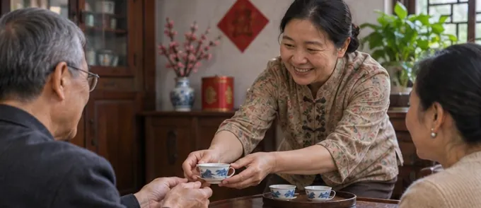

中国大陆（申报范围）｜以茶待客名录记录以茶迎接客人，饮茶也见于家中、茶馆和仪式。查看出处故事细节名录记录以茶迎接客人，饮茶也见于家中、茶馆和仪式。原文定位Traditional tea processing techniques and associated social practices in China · 项目简介打开原文 →
新加坡｜茶作为祭祖供品国家文物局资料记载，有些家庭在中元节祭祖时以茶叶作供品。查看出处故事细节国家文物局资料记载，有些家庭在中元节祭祖时以茶叶作供品。原文定位Making and Sharing of Tea · 祭祀用途段落打开原文 →